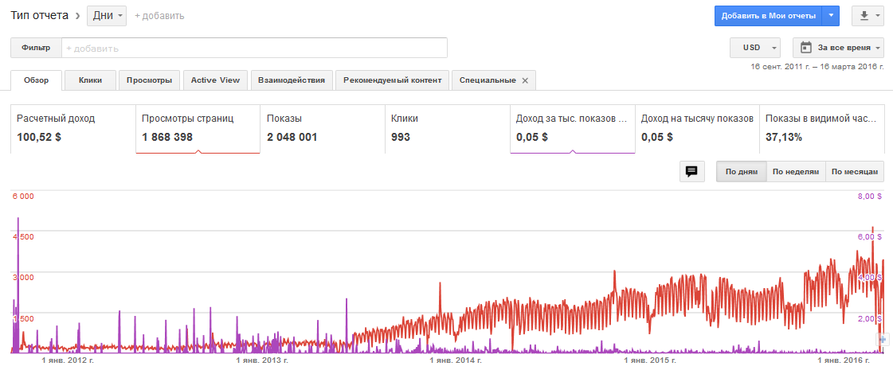
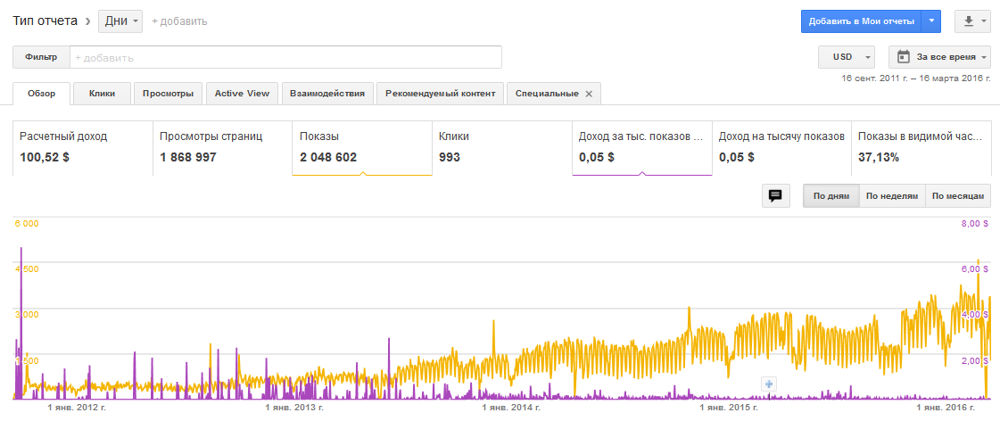

Сайт СДЛ со средней посещаемостью 2500 хостов в сутки. Висит три рекламных блока - малый небоскреб, два горизонтальных, все с разрешением текстовой и медиа-рекламы.
По графику видно, что доход за тысячу показов ассимптотически падает при увеличении числа посещений сайта и с приближением к минимальной сумме вывода в 100$. Зависимость обратно-пропорциональная: больше посещаемость, меньше заработки.
Заработать 100$ можно примерно лет за 5 лет (!). Неизвестно, какими характеристиками должен обладать сайт, чтобы заработать хотя бы 60-70$ в месяц.
Никакого смысла монетизироваться за счет Adsence нет, это жлобы еще те.
Вот и сам график (просмотры+доход на тыс. показов):

И еще один, за тот же период, другие показатели (показы+доход за тыс. показов), картина та же самая:
